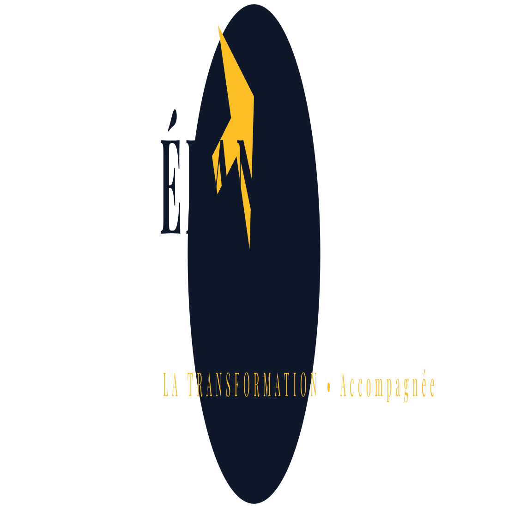

La transformation, accompagnée — Revue du concept D

Critique honnête — Concept D « contre-forme »
SimpleUne seule idée : un disque plein avec une flèche montante découpée en négatif.
Contre-formeL'espace vide (la flèche) fait le travail — c'est le signe d'un logo « dessiné », pas d'un aplat naïf.
Anti-clichéNi personnage bras levés, ni lotus, ni bois littéral, ni swoosh. La flèche est en diagonale (élan/mouvement), pas une flèche « up » statique.
RobusteTient en monochrome, en négatif, sur fond sombre et clair, et à 32 px (favicon).
Risque à surveillerUn disque + flèche peut frôler le « générique » (icône progress/upload). La diagonale + les proportions le distinguent — c'est le point à valider à l'œil.
Ma recommandation honnête : c'est la piste la plus pro et la plus robuste de toutes les esquisses (elle passe la matrice). Si tu la trouves trop sage, on la rend plus distinctive (courbe plus élancée, flèche qui « dépasse » l'anneau, ou contre-forme en chevron double). Ton regard décide.